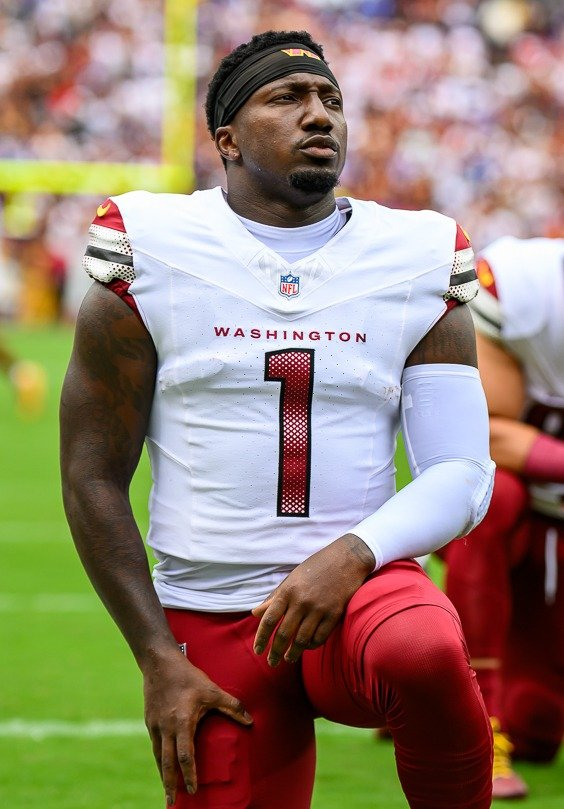

Deebo Samuel Is Coming Home: 49ers Bring Him Back on a One-Year, $7 Million Deal
One year, seven million dollars, and a face Niner Nation never actually wanted to stop seeing in red and gold. Deebo Samuel is back in San Francisco, and on a deal this team-friendly, it's hard to find a single reason to complain.

Some breakups just don't take, and this is one of them. Deebo Samuel is coming back to the 49ers on a one-year deal worth $7 million, and if you spent the last stretch of time trying to talk yourself into being fine with him playing anywhere else, you can stop pretending now. He's home, the price is a bargain, and Kyle Shanahan just got back one of the most uniquely dangerous weapons his offense has ever had.
Start with the number, because it tells you almost everything about how this deal came together. Seven million dollars for a single year is prove-it money, not legacy money, and that is exactly the kind of contract that works for both sides. San Francisco gets a genuine YAC monster and a legitimate jet-sweep and wildcat threat at a fraction of what he was making at his peak, with zero long-term risk if the wear and tear finally catches up to him. Deebo gets a real shot to remind the league what he looks like inside a scheme that was practically built around his exact skill set in the first place, on a roster now deep enough that nobody is going to overuse him just because there's no one else standing behind him.
And that is the part that should have Niner Nation the most excited. This isn't 2021 or 2022, when Deebo was one snapped ankle away from breaking the entire offense. This 49ers team already has Brock Purdy playing the best football of his career, a fully healthy Christian McCaffrey, Mike Evans and Christian Kirk in the receiver room, Ricky Pearsall coming into his own, and George Kittle still doing damage underneath. Adding Deebo back into that group doesn't put more weight on his shoulders. It takes weight off. He can play the joker role Shanahan always loved him for, the receiver who is really a running back who is really a matchup nightmare, without ever having to be the whole answer. That is the version of Deebo that terrorized the NFC for two straight years, and it is the version this offense is now built to bring back out of him.
There's a football fit here too that goes beyond nostalgia. Shanahan's offense has always leaned on players who blur positions, and there has never been a better example of that than Deebo Samuel. Defenses still have to account for him in the run game the second he lines up in the backfield, which means even a handful of snaps a week from him changes how a defensive coordinator has to game-plan the rest of the personnel groupings. On a team that already has this many answers, that kind of unpredictability isn't a luxury. It's the difference between a good offense and one that is genuinely impossible to defend for four quarters.
None of this works, of course, if the money isn't right, and that's exactly why this deal is so easy to like. A year ago a reunion like this would have required serious commitment and serious risk. Instead it cost seven million dollars and a phone call. Whatever mileage is left on Deebo Samuel, San Francisco just bought all of it at a discount, with an offense good enough now that it doesn't need him to be a superstar again. It just needs him to be himself, in flashes, at the moments that matter. Given what he's shown he can do with exactly that kind of opportunity, that's a bet worth making every time.
Deebo's back. The price was right, the fit still makes sense, and this roster just got another gear it didn't strictly need but will absolutely take advantage of anyway. Welcome home.
More coverage: 49ers section · Columns · Bay Area Sports Blog home